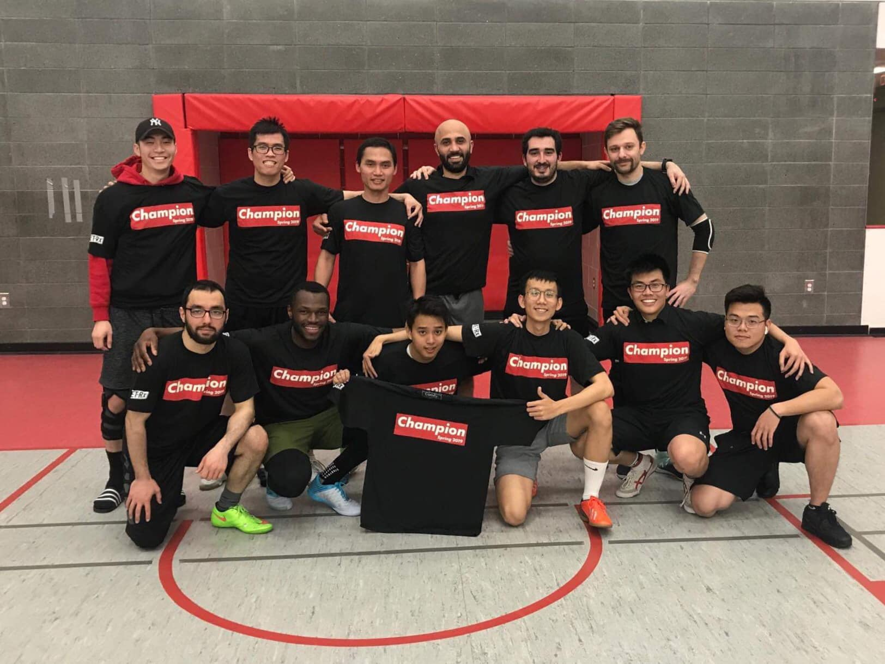
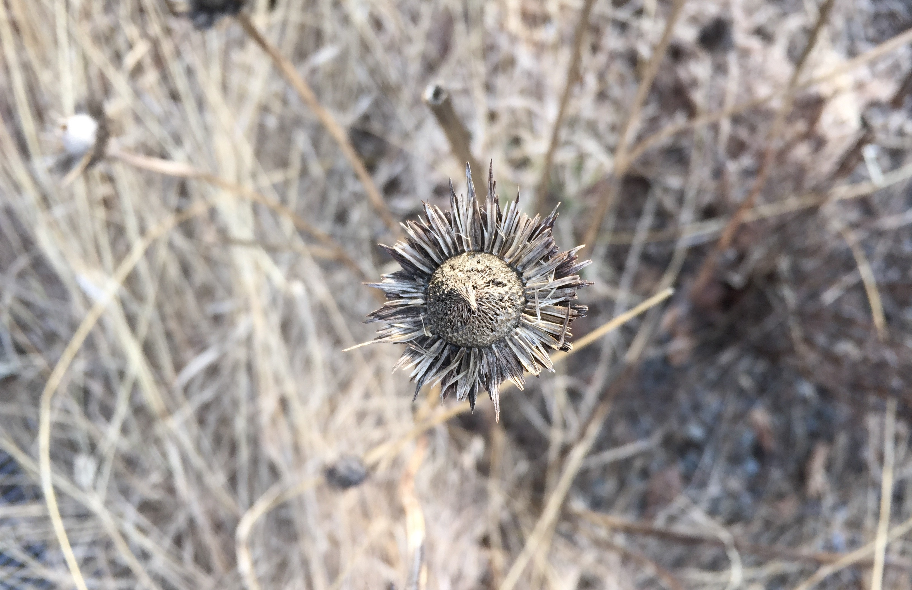

|
Vinh Quang Tran - Personal
Trivia
My full name in Vietnamese is Tran Quang Vinh, where my first name, Quang Vinh, means glory.
In Vietnam, the last word of the first name are often used for addressing your friend, hence, just call me Vinh (or Vin).
Tran is my surname and is the second most popular surname in Vietnam.
My full name can be written in Chinese characters as 陳光栄.
When I am not working, you probably find me in the rec center playing badminton or football.
If you can not find me in the rec center, I would be somewhere in the mountain hiking.
Oops! I am not in the mountain either. Go to the local bar. There is a high chance that I am drinking draft beer over there.
I am also an amateur photographer.
Football
|
 |
My football team won the Stony Brook University Recreational Indoor Tournament
Stony Brook, 2019
|
Hiking
|
|
Sunrise from Mount Fuji
Japan, 2011
|
Photography
|
 |
Levitation
New York, 2016
|
|